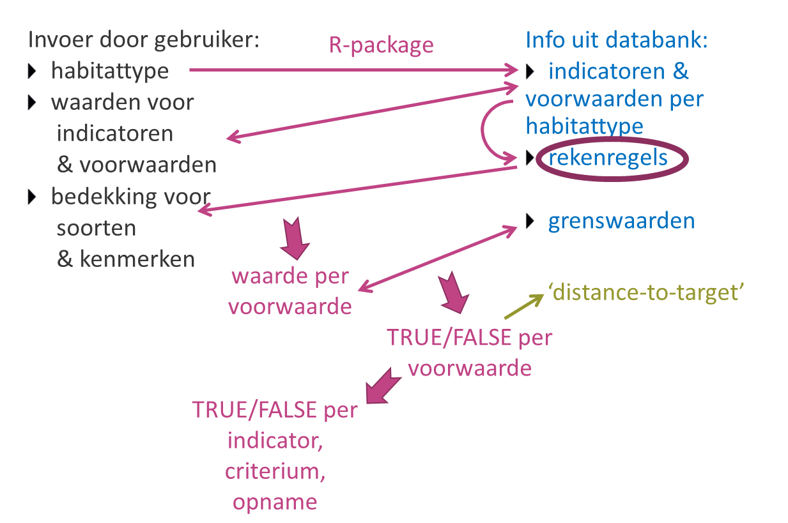

Technische achtergrond bij de berekeningen
Els Lommelen, Toon Westra en Hans Van Calster
2026-05-04
Source:vignettes/Berekeningen.Rmd
Berekeningen.RmdInleiding
De functie berekenLSVIbasis() berekent de Lokale Staat
van Instandhouding van habitattypen op basis van opnamen, maar wat
gebeurt er eigenlijk onder de motorkap? Dit vignet geeft hier een
antwoord op. (Voor inleidende informatie over het gebruik van het
package verwijzen we naar het vignet handleiding
(vignette("Handleiding", package = "LSVI")), en voor het
gebruik van deze berekenfunctie verwijzen we naar de help van de functie
in kwestie (?berekenLSVIbasis).
Beschikbare gegevens en informatie
De gebruiker kan per opname 3 typen informatie invoeren:
- habitattype: tabel die voor elke opname aangeeft volgens de criteria van welk habitattype de LSVI berekend moet worden
- waarden voor indicatoren en voorwaarden (facultatief, afhankelijk van beschikbare gegevens): tabel met per opname rechtstreeks ingeschatte waarden voor indicatoren en voorwaarden zoals die in de LSVI-criteria vermeld zijn
- bedekking voor soorten en/of kenmerken (facultatief, afhankelijk van beschikbare gegevens): tabel met per opname soorten en/of kenmerken en hun bedekkingen (of aan-/afwezigheid), bv. gegevens die afkomstig zijn uit een volledige vegetatie-opname
De achterliggende databank bevat ook 3 soorten informatie (op te
vragen met de functie geefInvoervereisten()):
- indicatoren en voorwaarden per habitattype (op basis waarvan de LSVI bepaald wordt)
- een grenswaarde (
Referentiewaarde) en operator voor elke voorwaarde (die aangeeft wanneer de staat gunstig of goed is) - rekenregels (= alle nodige info om een voorwaarde te kunnen berekenen)
str(geefInvoervereisten(Habitattype = "4030"))## 'data.frame': 21 obs. of 32 variables:
## $ Versie : chr "Versie 2.0" "Versie 2.0" "Versie 2.0" "Versie 2.0" ...
## $ Habitattype : chr "4030" "4030" "4030" "4030" ...
## $ Habitatsubtype : chr "4030" "4030" "4030" "4030" ...
## $ Criterium : chr "Structuur" "Structuur" "Verstoring" "Verstoring" ...
## $ Indicator : chr "ouderdomsstructuur Struikheide" "ouderdomsstructuur Struikheide" "vergrassing/verruiging" "vergrassing/verruiging" ...
## $ Beoordeling : chr "A: alle stadia aanwezig" "B: 2 tot 3 stadia aanwezig" "B: 30-50%" "A: < 30%" ...
## $ Kwaliteitsniveau : int 2 1 1 2 2 1 1 2 1 1 ...
## $ Belang : chr "b" "b" "zb" "zb" ...
## $ BeoordelingID : int 321 322 323 324 317 318 319 320 1070 1070 ...
## $ Combinatie : chr "312" "311" "1761" "1762" ...
## $ VoorwaardeID : int 312 311 1761 1762 788 782 1585 1584 320 2138 ...
## $ Voorwaarde : chr "aantal ouderdomsstadia" "aantal ouderdomsstadia" "bedekking vergrassing/verruiging" "bedekking vergrassing/verruiging" ...
## $ Referentiewaarde : chr "4" "2" "50" "30" ...
## $ Operator : chr ">=" ">=" "<=" "<" ...
## $ Maximumwaarde : num 4 4 1 1 1 1 1 1 4 2 ...
## $ AnalyseVariabele : chr "aantal" "aantal" "bedekking" "bedekking" ...
## $ Eenheid : chr NA NA "%" "%" ...
## $ TypeVariabele : chr "Geheel getal" "Geheel getal" "Percentage" "Percentage" ...
## $ Invoertype : chr NA NA NA NA ...
## $ Invoerwaarde : chr "NA" "NA" "NA" "NA" ...
## $ TaxongroepId : int NA NA 531 531 99 99 891 890 NA NA ...
## $ TaxongroepNaam : chr NA NA "vergrassing/verruiging" "vergrassing/verruiging" ...
## $ Studiegroepnaam : chr "50pioniersstadium&100ontwikkelingsstadium&150climaxstadium&200degeneratiestadium" "50pioniersstadium&100ontwikkelingsstadium&150climaxstadium&200degeneratiestadium" NA NA ...
## $ Studielijstnaam : chr "ouderdomsstadia" "ouderdomsstadia" NA NA ...
## $ Studiewaarde : chr "pioniersstadium, ontwikkelingsstadium, climaxstadium, degeneratiestadium" "pioniersstadium, ontwikkelingsstadium, climaxstadium, degeneratiestadium" "NA" "NA" ...
## $ SubAnalyseVariabele: chr NA NA NA NA ...
## $ SubEenheid : chr NA NA NA NA ...
## $ TypeSubVariabele : chr NA NA NA NA ...
## $ SubReferentiewaarde: chr NA NA NA NA ...
## $ SubOperator : chr NA NA NA NA ...
## $ SubInvoertype : chr NA NA NA NA ...
## $ SubInvoerwaarde : chr "NA" "NA" "NA" "NA" ...Algemene workflow
Wat de functie berekenLSVIbasis() doet na controle van
de gebruikersinvoer, is in een notendop:
- voor het door de gebruiker ingegeven habitattype opzoeken in de databank welke indicatoren en voorwaarden berekend moeten worden
- de door de gebruiker ingegeven waarden voor indicatoren en voorwaarden hieraan koppelen
- voor de waarden die nog niet ingevuld zijn: in de databank de rekenregels opzoeken en voor elke voorwaarde een waarde proberen te berekenen op basis van de door de gebruiker ingegeven bedekkingen voor soorten en kenmerken
- voor elke voorwaarde de geobserveerde/berekende waarde vergelijken met de grenswaarde in de databank, en rekening houdend met de operator een status (gunstig of ongunstig, weergegeven als resp. TRUE of FALSE) bepalen en een verschilscore of distance-to-target berekenen
- de resultaten aggregeren naar de hogere niveaus (indicator, criterium, opname) en telkens een status en distance-to-target berekenen

Schematische voorstelling van de workflow
Deze workflow geeft dus voorrang aan rechtstreeks ingeschatte indicatoren en voorwaarden, wat doorgaans de meest accurate waarden zijn. Dit betekent dat je als gebruiker door het opgeven van een voorwaarde met waarde NA kan aangeven dat je niet wil dat een bepaalde voorwaarde berekend wordt, omdat je weet dat het resultaat niet betrouwbaar gaat zijn (bijvoorbeeld omdat je niet van alle soorten een bedekking hebt ingeschat).
In wat volgt, wordt dieper ingegaan op de onderdelen waarin relevante “berekeningen” gebeuren of die mogelijk vragen zouden kunnen oproepen:
- hoe worden die rekenregels precies uitgevoerd, wat betekent die
AnalyseVariabele? - hoe werkt dat precies met die soortenlijsten, wat gebeurt er als ik niet exact dezelfde naam opgeef?
- wat als ik niet dezelfde schaal gebruik als de grenswaarde, hoe gebeurt die omzetting?
- hoe wordt de status precies bepaald?
- wat is distance-to-target en hoe wordt het berekend?
Berekening van voorwaarden
Inleiding
Veel voorwaarden voor de bepaling van de LSVI zijn gebaseerd op het tellen van aantallen en/of het inschatten/berekenen van bedekkingen van soorten of kenmerken. Dit betekent dat de “berekening” uitgaande van een volopname (met voor elke plantensoort een geschatte bedekking, eventueel aangevuld met andere vegetatiekenmerken) vaak een gelijkaardig stramien volgt, al zijn er soms aanzienlijke nuanceverschillen. Enkele voorbeelden om dit te illustreren.
Voor de voorwaarde “aantal sleutelsoorten minstens frequent aanwezig” zal het script de volgende stappen doorlopen:
- checkt in de databank de lijst met sleutelsoorten voor het habitattype in kwestie
- selecteert deze sleutelsoorten uit de opname die de gebruiker invoerde
- selecteert hieruit de soorten die minstens frequent aanwezig zijn
- telt dit aantal soorten
De voorwaarde “aantal ouderdomsstadia minstens frequent aanwezig” kan op dezelfde manier berekend worden, maar dan op basis van een lijst (in de databank) die alle ouderdomsstadia weergeeft. En uiteraard veronderstelt dit dat de gebruiker voor deze ouderdomsstadia een bedekking invoerde in de tabel met soorten en kenmerken.
Om de voorwaarde “bedekking boomlaag” te berekenen, zal het script volgende stappen doorlopen:
- checkt of de gebruiker voor de boomlaag een totale bedekking ingeschat heeft (en gebruikt dan deze waarde als resultaat)
- indien niet:
- selecteert alle boomsoorten uit de opname die in de boomlaag voorkomen (op basis van een lijst met alle boomsoorten uit de databank)
- berekent de totale bedekking van deze soorten samen, rekening houdend met een gedeeltelijke overlap van de vegetatie
Het stukje “selecteert de soorten of kenmerken uit de opname” komt in bijna alle voorwaarden terug. Soms moet er achteraf nog een extra selectie gebeuren, bv. enkel soorten of kenmerken die minstens of maximaal een bepaalde bedekking hebben of enkel soorten uit een bepaalde vegetatielaag, soms niet. Vaak is het uiteindelijke eindresultaat een telling van het aantal soorten of een totale bedekking van alle soorten samen. Soms wordt de totale bedekking van een volledige vegetatielaag gevraagd, en dan zal de rekenmodule de berekening op basis van de opgegeven soortenlijst (die verondersteld is om een volopname te zijn) enkel doen als de totale bedekking van de vegetatielaag niet opgegeven is.
Globaal bekeken is het aantal verschillende berekeningswijzen (oftewel stukjes script die nodig zijn) relatief beperkt, maar zoals de “soms” en de “vaak” in voorgaande alinea aangeven, moeten deze wel zeer flexibel ingezet kunnen worden afhankelijk van de voorwaarde. Deze flexibiliteit is in het package opgevangen door voor elke voorwaarde de berekeningswijze als een set van “rekenregels” te coderen in de databank. Zo is de voorwaarde “aantal sleutelsoorten minstens frequent aanwezig” als volgt gecodeerd:
str(
geefInvoervereisten(
Versie = "versie 2.0", Habitattype = "2330_dw",
Indicator = "sleutelsoorten", Kwaliteitsniveau = 1
)
)## 'data.frame': 1 obs. of 32 variables:
## $ Versie : chr "Versie 2.0"
## $ Habitattype : chr "2330"
## $ Habitatsubtype : chr "2330_dw"
## $ Criterium : chr "Vegetatie"
## $ Indicator : chr "sleutelsoorten"
## $ Beoordeling : chr "B: <= 3 minstens frequent aanwezig"
## $ Kwaliteitsniveau : int 1
## $ Belang : chr "b"
## $ BeoordelingID : int 211
## $ Combinatie : chr "473"
## $ VoorwaardeID : int 473
## $ Voorwaarde : chr "aantal sleutelsoorten frequent"
## $ Referentiewaarde : chr "1"
## $ Operator : chr ">="
## $ Maximumwaarde : num 3
## $ AnalyseVariabele : chr "aantal"
## $ Eenheid : chr NA
## $ TypeVariabele : chr "Geheel getal"
## $ Invoertype : chr NA
## $ Invoerwaarde : chr "NA"
## $ TaxongroepId : int 431
## $ TaxongroepNaam : chr "sleutelsoorten"
## $ Studiegroepnaam : chr NA
## $ Studielijstnaam : chr NA
## $ Studiewaarde : chr "NA"
## $ SubAnalyseVariabele: chr "bedekking"
## $ SubEenheid : chr NA
## $ TypeSubVariabele : chr "Categorie"
## $ SubReferentiewaarde: chr "f"
## $ SubOperator : chr ">="
## $ SubInvoertype : chr "TANSLEY IHD"
## $ SubInvoerwaarde : chr "A, CD, D, F, LA, LCD, LD, LF, LO, LR, LS, O, R, RA, RCD, RD, RF, RO, RR, RS, S, lf"Scriptmatig wordt dus gecheckt welke variabelen (“rekenregels”) in de databank ingevuld zijn en welke waarden ze hebben, en deze combinatie bepaalt welke stukjes script voor het bepalen van die voorwaarde doorlopen worden. In enkele gevallen kan een variabele ietwat contextafhankelijk zijn, dus een lichtjes andere interpretatie hebben afhankelijk van de inhoud van andere variabelen.
Rekenregels
De belangrijkste variabele in de rekenregels is
AnalyseVariabele. Deze verwijst rechtstreeks naar een
welbepaald script dat leidt tot de bepaling van de LSVI voor die
voorwaarde. Er zijn enkele basisscripts, zoals bv.
AnalyseVariabelen aantal en
bedekking, die een globale workflow bevatten die door de
meeste scripts min of meer overgenomen wordt. De afgeleide scripts
(“nakomelingen” van aantal of bedekking) doen
vaak dezelfde handeling maar voorafgegaan en/of gevolgd door een extra
handeling. Zo berekent bedekking de totale bedekking van
alle opgegeven soorten die in de taxonlijst staan (rekening houdend met
overlap), terwijl bedekkingLaag eerst checkt of er een
totale bedekking ingeschat is voor de opgegeven laag. Indien niet, dan
gebruikt ze de procedure van bedekking om de totale
bedekking te berekenen voor alle soorten die in deze vegetatielaag
voorkomen (op basis van een taxonlijst die bv. alle bomen (voor
boomlaag) of alle mossen (voor moslaag) bevat).
Bij de verschillende analysevariabelen kan het gebruik of de
interpretatie van de variabelen in de databank afwijkend zijn. Zo
berekent bijvoorbeeld de AnalyseVariabele
bedekkingExcl de totale bedekking van alle soorten van de
opname behalve deze die in de taxonlijst vermeld staan (terwijl bij
andere berekeningen de soorten in de taxonlijst net wel in beschouwing
genomen worden). Om een berekening ten volle te begrijpen, is het dus
belangrijk om de beschrijvingen van de berekeningswijzen voor de
verschillende analysevariabelen verderop in dit hoofdstuk door te nemen.
Het deel van de workflow dat ze bijna allemaal gemeenschappelijk hebben,
is beschreven in een eerste onderdeeltje AnalyseVariabele.
Meestal is er ook een variabele TaxongroepId of een
studielijst (variabelen Studielijstnaam en
Studiewaarde) toegevoegd. Deze verwijzen naar de voor de
voorwaarde relevante soortenlijst(en) of kenmerken. Een voorbeeld van
een studielijst zijn de ouderdomsklassen van heide. Idee is dat de
gebruiker voor elk van de kenmerken (in dit geval ouderdomsklassen) een
waarde (in dit geval bedekking) opgeeft, en op basis hiervan wordt bv.
“berekend” hoeveel klassen er minstens frequent aanwezig zijn. Voor de
studielijsten staan de kenmerken rechtstreeks opgesomd onder
Studiewaarde.
Om de tabel niet te overladen, zijn de soortenlijsten niet
rechtstreeks toegevoegd in de tabel, maar vervangen door een verwijzing
naar een TaxongroepId. De volledige lijst van bv.
TaxongroepId 123 kan opgevraagd worden met het commando
geefSoortenlijstVoorIDs("123") (en in de string kunnen
meerdere TaxongroepId’s gescheiden door een ,
opgegeven worden).
Om een gebruiker niet te verplichten om ook alle soorten in te geven die hij niet gezien heeft, gaat de rekenmodule ervan uit dat er voor de soorten een volopname gebeurd is van zodra er minstens 1 soort toegevoegd is aan de tabel met soorten en kenmerken. Concreet zal hij in dit geval alle niet ingevoerde soorten beschouwen als afwezig of soorten met een bedekking van 0 %. Als er geen enkele soort ingevoerd is, zullen voorwaarden in verband met soorten die niet rechtstreeks ingeschat zijn, de waarde NA krijgen. En voor kenmerken is hetzelfde principe toegepast: zodra 1 kenmerk van een bepaalde studielijst opgegeven is, gaat de rekenmodule ervan uit dat de andere kenmerken van die lijst niet aanwezig waren (bv. als pioniersstadium opgegeven is, zal er voor ouderdomsklassen van uitgegaan worden dat de andere klassen afwezig waren). Ingeval van gedeeltelijke opnamen is het dus aan de gebruiker om voor elke voorwaarde in te schatten in hoeverre het resultaat betrouwbaar is en evt. rechtstreeks een waarde op te geven voor de voorwaarde.
Binnen een voorwaarde kan ook een “subvoorwaarde” gedefinieerd zijn (opgesplitst in meerdere variabelen met “Sub” in de naam), die een bijkomend selectiecriterium geeft dat toegepast wordt op alle soorten en/of kenmerken uit de lijst. Zo is de subvoorwaarde “minimaal frequent aanwezig” uit bovenstaand voorbeeld gecodeerd met o.a.:
-
subAnalyseVariabele“bedekking” -
TypeSubvariabele“Categorie” -
Subreferentiewaarde“f” (-> frequent) -
SubOperator“>=”
Tenslotte zijn er nog een aantal variabelen die verschillen in
gebruikte schalen of meeteenheden opvangen. Zo geven
Type(Sub)Variabele,
(Sub)Invoertype en
(Sub)Invoerwaarde aan wat voor variabele de
(Sub)Referentiewaarde in de databank is,
waardoor de gebruiker niet verplicht is om dezelfde variabele en eenheid
te gebruiken. Voor verdere uitleg hierover verwijzen we naar het
onderdeel over Bedekking en
Schalen.
AnalyseVariabele
Bij het berekenen van een AnalyseVariabele wordt vaak de
(interne) functie selecteerKenmerkenInOpname() aangeroepen
om de soorten of kenmerken uit de opname van de gebruiker te selecteren.
Om de workflow van deze functie niet te herhalen in elk van onderstaande
analysevariabelen (berekeningswijzen), bespreken we hem hier apart.
In te voeren parameters voor deze functie zijn de door de gebruiker ingevoerde opname (soorten en/of kenmerken) en de velden die in de databank gedefinieerd zijn voor de voorwaarde. De workflow van de functie is als volgt:
Als een taxonlijst of studielijst vermeld is in de voorwaarde, zullen de elementen uit deze lijst geselecteerd worden in de opname van de gebruiker. Als zowel taxonlijst als studielijst vermeld zijn, dan bestaat deze studielijst altijd uit een of meerdere vegetatielagen, en dan worden de soorten uit de taxonlijst geselecteerd in de opname van de gebruiker die in de in de studielijst vermelde vegetatielaag of vegetatielagen voorkomen.
Als er een subvoorwaarde vermeld is in de voorwaarde, zullen uit de geselecteerde deellijst van de opname enkel de elementen geselecteerd worden die aan de subvoorwaarde voldoen (bv. minimum of maximum een bepaalde bedekking of aandeel zijn).
Zoals eerder aangegeven, zal een opname zonder soorten (ingeval van taxonlijst) of kenmerken (ingeval van studielijst) resulteren in NA.
Voor taxonlijsten is de routine iets complexer dan hierboven beschreven, maar deze details zijn uitgebreid beschreven in het hoofdstuk Afhandeling taxonlijsten.
aantal
Bij de voorwaarden met analysevariabele aantal wordt het
aantal records (soorten of kenmerken) geteld dat door
selecteerKenmerkenInOpname() teruggegeven wordt, dus hier
wordt simpelweg het aantal relevante soorten (ingeval van taxonlijst) of
kenmerken (ingeval van studielijst) geteld dat voorkomt in de door de
gebruiker ingegeven opname en voldoet aan een eventuele subvoorwaarde.
Als samen met een taxonlijst ook een studielijst opgegeven wordt, dan is
deze te interpreteren als een tweede subvoorwaarde. In de praktijk gaat
het hier over de vegetatielaag waarin de soorten moeten voorkomen.
bedekking
Bij de voorwaarden met analysevariabele bedekking wordt
de totale bedekking berekend van de records (soorten of kenmerken) die
door selecteerKenmerkenInOpname() teruggegeven worden, dus
hier wordt de totale bedekking berekend van de relevante soorten
(ingeval van taxonlijst) of kenmerken (ingeval van studielijst) die
voorkomen in de door de gebruiker ingegeven opname en voldoen aan een
eventuele subvoorwaarde. Als samen met een taxonlijst ook een
studielijst opgegeven wordt, dan is deze te interpreteren als een tweede
subvoorwaarde. In de praktijk gaat het hier over de vegetatielaag waarin
de soorten moeten voorkomen.
Voor de berekening van de totale bedekking wordt gebruik gemaakt van de formule van Fisher:
met de totale bedekking in proportie (dus percentage / 100), de bedekking van de individuele soorten in proportie (dus percentage / 100) (en het product)
Deze formule geeft uiteraard maar een benaderende waarde die minder accuraat is dan een rechtstreekse inschatting van de totale bedekking van de soorten van de lijst samen (dus gebruik maken van rechtstreekse inschattingen heeft de voorkeur als deze beschikbaar zijn). In tegenstelling tot een gewone som van bedekkingen, gaat ze uit van een gedeeltelijke overlap van soorten, wat vaak een betere benadering zal zijn. Een ander pluspunt is dat het resultaat (de totale bedekking) nooit meer dan 1 of 100 % zal zijn.
bedekkingExcl
Bij de analysevariabele bedekkingExcl gaat de voorwaarde
over de totale bedekking van de soorten of kenmerken die niet in een
lijst voorkomen, bv. alle soorten behalve de sleutelsoorten.
Bij voorwaarden met deze analysevariabele worden de soorten of
kenmerken geselecteerd op basis van een functie
deselecteerKenmerkenInOpname(), die in de opname van de
gebruiker de soorten of kenmerken schrapt die in resp. de taxonlijst of
studielijst voorkomen (en de overblijvende soorten of kenmerken vormen
de selectie). Als een taxonlijst én studielijst opgegeven is, berekent
de functie de totale bedekking van soorten die niet in de opgegeven
taxonlijst staan en wél in de opgegeven vegetatielaag voorkomen (bv.
alle soorten uit de kruidlaag behalve de soorten uit de taxonlijst).
Verder gebeurt de berekening analoog aan deze van de analysevariabele bedekking: met de formule van Fisher
wordt de totale bedekking van deze selectie berekend.
bedekkingLaag
Bij de analysevariabele bedekkingLaag gaat de voorwaarde
over de totale bedekking van een vegetatielaag, bv. de boom- en
struiklaag of de moslaag. In dit geval is de vegetatielaag in kwestie
als studielijst ingegeven (met evt. de verschillende deellagen zoals
boomlaag en struiklaag ook vermeld als aparte items), en de taxonlijst
bevat een lijst van alle soorten die in deze laag voorkomen.
Bij voorwaarden met deze analysevariabele zal eerst gecheckt worden of kenmerken uit de studielijst voorkomen in de opname van de gebruiker.
- Als dat zo is, dan zal de bedekking afgeleid worden van het kenmerk
of de kenmerken in de studielijst. (Meer concreet: de berekening gebeurt
zoals bij analysevariabele
bedekkingnadat eerstTaxongroepIduit de voorwaarden geschrapt is, dus de selectie van de lagen gebeurt op basis van enkel de studielijst) - Als dat niet zo is, dan zal de bedekking afgeleid worden op basis
van opgegeven taxonlijst en zal de voorwaarde uitgevoerd worden na enkel
de analysevariabele te vervangen door
bedekking(dus de studielijst met de vegetatielaag blijft behouden, waardoor enkel soorten uit die laag geselecteerd zullen worden)
bedekkingLaagExcl
De analysevariabele bedekkingLaagExcl is zeer analoog
aan bedekkingLaag, maar lost
een taxonlijst-gerelateerd probleem op dat voorkomt bij de taxonlijst
van de boomlaag. Om ervoor te zorgen dat ook in de opname van de
gebruiker ingevoerde genera als boom beschouwd worden, bestaat de lijst
van bomen en struiken uit genera. Lagere taxonomische niveaus worden
automatisch ook meegenomen (zie Afhandeling
taxonlijsten). Er is echter 1 moeilijkheid: Salix repens
zou niet meegenomen mogen worden want dit is geen boom (die wel in de
struiklaag zou kunnen voorkomen). Anderzijds zijn er een aantal moeilijk
te determineren Salix-soorten die evt. als genus in een opname
zou kunnen voorkomen, maar die allen bomen zijn. We gaan ervan uit dat
Salix repens wel herkend wordt en dus tot op soortniveau in een
opname toegevoegd zal worden, en enkel moeilijk te herkennen
Salix-soorten als genus toegevoegd worden. Vanuit die
redenering worden “Salix sp.” en de Salix-soorten als
boom beschouwd, met uitzondering van Salix repens.
Dit probleempje heeft aanleiding gegeven voor een nieuwe
analysevariabele, die uiteraard ook ruimer gebruikt kan worden. Bij
voorwaarden met deze analysevariabele verwijst het
TaxongroepId naar een taxonlijst bestaande uit 2
sublijsten: een lange lijst (bv. alle genera van bomen) en een kort
lijstje (bv. Salix repens).
Bij de berekening zal eerst gecheckt worden of er inderdaad 2
sublijsten zijn, en in dat geval zullen als een eerste stap de taxa van
het kortste lijstje geschrapt worden in de lijst van de taxa met het
langste lijstje (in een lijst waarin alle mogelijke taxonniveaus
toegevoegd zijn). Daarna zal met de eventueel aangepaste taxonlijst de
voorwaarde uitgerekend worden volgens analysevariabele bedekkingLaag.
bedekkingLaagPlus
Bij de analysevariabele bedekkingLaagPlus gaat de
voorwaarde over de totale bedekking van een vegetatielaag en een
taxongroep, bv. de bedekking van de moslaag en klimop. Verschillend van
bedekkingLaag verwijst het
TaxongroepId naar een taxonlijst met 2 taxonsublijsten (zie
Afhandeling taxonlijsten): een lange lijst
met alle soorten van de vegetatielaag die in studielijst vermeld is (in
het voorbeeld alle mossen), en een korte lijst met de soorten waarvan de
bedekking hierbij opgeteld moet worden (in het voorbeeld klimop).
Bij de berekening zal eerst gecheckt worden of er inderdaad 2
sublijsten zijn, en in dat geval worden deze opgesplitst in 2 lijsten.
Op basis van de kortste lijst wordt de bedekking van deze soort(en)
berekend volgens de analysevariabele bedekking (waarbij de studielijst
buiten beschouwing gelaten wordt). Op basis van het langste lijst en de
studielijst wordt de bedekking van de vegetatielaag berekend volgens de
analysevariabele bedekkingLaag. Daarna wordt de
voorwaarde berekend door beide bedekkingen op te tellen volgens de
formule van Fisher (zie onder bedekking). (Ingeval er geen 2
sublijsten zijn, zal de voorwaarde als weergegeven in de databank,
berekend worden volgens analysevariabele bedekkingLaag).
bedekkingSom
Bij de analysevariabele bedekkingSom gaat de voorwaarde
over de totale bedekking van een taxongroep en een studiegroep, bv. de
bedekking van pioniersvegetatie en open zand.
De bedekkingen worden berekend volgens de analysevariabele bedekking voor enerzijds de
studielijst (waarbij TaxongroepId buiten beschouwing
gelaten wordt), en anderzijds voor TaxongroepId (waarbij de
studielijst buiten beschouwing gelaten wordt). Daarna wordt de
voorwaarde berekend door beide bedekkingen op te tellen. Vermits de
studielijst doorgaans geen vegetatie bevat, wordt niet uitgegaan van een
gedeeltelijke overlap en wordt een gewone som gebruikt.
maxBedekking
Bij de voorwaarden met analysevariabele maxBedekking
wordt de maximale bedekking geselecteerd uit de records (soorten of
kenmerken) die door selecteerKenmerkenInOpname()
teruggegeven worden (zie onder AnalyseVariabele), dus hier
wordt de soort of kenmerk met de hoogste bedekking geselecteerd uit de
relevante soorten (ingeval van taxonlijst) of kenmerken (ingeval van
studielijst) die voorkomen in de door de gebruiker ingegeven opname en
voldoen aan een eventuele subvoorwaarde. Als samen met een taxonlijst
ook een studielijst opgegeven wordt, dan is deze te interpreteren als
een tweede subvoorwaarde. In de praktijk gaat het hier over de
vegetatielaag waarin de soorten moeten voorkomen.
maxBedekking2s
De analysevariabele maxBedekking2s is gelijkaardig aan
maxBedekking met als enige
verschil dat bij 2 of meer aanwezige soorten of kenmerken, de
bedekkingen van de 2 soorten of kenmerken met de hoogste bedekking
opgeteld worden volgens de formule van Fisher (zie onder bedekking).
maxBedekkingExcl
Bij de analysevariabele maxBedekkingExcl gaat de
voorwaarde over de maximale bedekking van de soorten of kenmerken die
niet in een lijst voorkomen, bv. alle soorten behalve de
sleutelsoorten.
Bij voorwaarden met deze analysevariabele worden de soorten of
kenmerken geselecteerd op basis van een functie
deselecteerKenmerkenInOpname(), die in de opname van de
gebruiker de soorten of kenmerken schrapt die in resp. de taxonlijst of
studielijst voorkomen (en de overblijvende soorten of kenmerken vormen
de selectie). Verder gebeurt de berekening analoog aan deze van de
analysevariabele maxBedekking:
de soort of kenmerk met maximale bedekking wordt geselecteerd uit de
selectie.
aandeel
Bij de analysevariabele aandeel gaat de voorwaarde over
grondvlakken of volumes van bomen. Terwijl alle andere analysevariabelen
enkel door gebruikers ingevoerde records in beschouwing nemen waarbij
Eenheid niet gelijk is aan “grondvlak_ha” of “volume_ha”,
zal deze analysevariabele deze records net wel in beschouwing nemen (en
alle andere records wissen).
Om het totale grondvlak of volume te berekenen van de relevante
soorten, wordt de som genomen van resp. de grondvlakken of volumes van
de records (in principe soorten, maar voor kenmerken zou het technisch
ook werken) die door selecteerKenmerkenInOpname()
teruggegeven worden (zie onder AnalyseVariabele), dus hier
wordt het totale grondvlak of volume berekend van de relevante soorten
(uit taxonlijst) die voorkomen in de door de gebruiker ingegeven opname
en voldoen aan een eventuele subvoorwaarde. Als samen met een taxonlijst
ook een studielijst opgegeven wordt, dan is deze te interpreteren als
een tweede subvoorwaarde. In de praktijk gaat het hier over de
vegetatielaag waarin de soorten moeten voorkomen.
Om tenslotte het aandeel te berekenen, wordt het bekomen grondvlak of
volume gedeeld door het totale grondvlak of volume van alle opgegeven
soorten, wat de som is van alle soorten in de opname met
Eenheid “grondvlak_ha” of “volume_ha”.
aandeelKruidlaag
De analysevariabele aandeelKruidlaag heeft eigenlijk een
ietwat slecht gekozen naam, omdat de functie in principe het aandeel ten
opzichte van eender welke vegetatielaag berekent. Bij voorwaarden met
deze analysevariabele verwijst TaxongroepId naar een lijst
met de relevante soorten om het aandeel te berekenen, en studielijst
vermeldt de vegetatielaag waarin dit aandeel bestudeerd wordt.
De totale bedekking van de relevante soorten wordt berekend door de
voorwaarde (met TaxongroepId en studielijst) te berekenen
volgens de analysevariabele bedekking. Voor de totale bedekking
van de vegetatielaag zal eerst gecheckt worden of het kenmerk uit de
studielijst (de vegetatielaag) voorkomt in de opname van de
gebruiker.
- Als dat zo is, dan zal de bedekking afgeleid worden van het kenmerk in de studielijst.
- Als dat niet zo is, dan zal de bedekking afgeleid worden van de opname van de gebruiker waaruit enkel soorten van de vegetatielaag in kwestie (bepaald op basis van studielijst) gefilterd zijn.
Om de voorwaarde te berekenen, zal de totale bedekking van de relevante soorten gedeeld worden door de totale bedekking van de vegetatielaag.
aandeelLaagExcl
De analysevariabele aandeelLaagExcl is eigenlijk een
combinatie van analysevariabelen aandeelKruidlaag en bedekkingLaagExcl.
Ze berekent het aandeel bedekking van de relevante soorten ten
opzichte van de in de studiegroep opgegeven vegetatielaag, zoals bij aandeelKruidlaag. Maar net
zoals bij analysevariabele bedekkingLaagExcl hebben
voorwaarden met deze analysevariabele een TaxongroepId die
verwijst naar een taxonlijst bestaande uit 2 sublijsten: een lange lijst
met taxa die meegenomen moeten worden voor de berekening (bv. alle
genera van grassen) en een kort lijstje met soorten die genegeerd moeten
worden in de voorgaande lijst (bv. Ammophila arenaria en
Festuca juncifolia). Dit laat dus toe om voorwaarden als de
bedekking van alle grassen behalve Helm en Duinzwenkgras te berekenen,
waarbij alle Festuca-soorten behalve F. juncifolia
meegenomen worden, en dit voor situaties waarin de bedekking ten
opzichte van een bepaalde laag berekend wordt (bv. t.o.v. de totale
vegetatiebedekking in de duinen).
Bij de berekening zal eerst gecheckt worden of er inderdaad 2
sublijsten zijn, en in dat geval zullen als een eerste stap de taxa van
het kortste lijstje geschrapt worden in de lijst van de taxa met het
langste lijstje (in een lijst waarin alle mogelijke taxonniveaus
toegevoegd zijn). Daarna zal met de eventueel aangepaste taxonlijst de
voorwaarde uitgerekend worden volgens analysevariabele aandeelKruidlaag, dus de
bedekking van de soorten ten opzichte van de in de studiegroep opgegeven
vegetatielaag.
aantalGroepen
De analysevariabele aantalGroepen gaat specifiek over
kenmerken die eigenlijk soortenlijsten zijn, bv. helofyten. Deze
kenmerken zijn in de databank enerzijds weergegeven in de studielijst,
en anderzijds verwijst het TaxongroepId naar een taxonlijst
met meerdere taxonsubgroepen die elk overeenkomen met een van de
kenmerken (en die de relevante soorten bevatten).
Bij voorwaarden met deze analysevariabele zal eerst gecheckt worden of kenmerken uit de studielijst voorkomen in de opname van de gebruiker.
- Als dat zo is, dan zal het aantal afgeleid worden van de kenmerken
in de studielijst. (Meer concreet: de berekening gebeurt zoals bij
analysevariabele
aantalnadat eerstTaxongroepIduit de voorwaarden geschrapt is) - Als dat niet zo is, dan zal het aantal afgeleid worden op basis van
opgegeven taxonlijst. Concreet zal de originele voorwaarde wat aangepast
worden (de studielijst wordt geschrapt en de taxonlijst wordt herwerkt
zodat de originele taxonsubgroepen afzonderlijke taxa of soorten worden
binnen 1 taxonlijst), waarna de berekening van het aantal groepen of
kenmerken kan gebeuren volgens de analysevariabele
aantal. (Zoals beschreven in Afhandeling taxonlijsten hieronder, zal de aggregatie van de opgegeven taxa - die nu als subtaxa beschouwd worden - gebeuren door de totale bedekking te berekenen en op de resulterende lijst de eventuele subvoorwaarde uit te voeren, waarna het aantal originele taxonsubgroepen - nu hernoemd als taxa - geteld wordt.)
scoresom
De analysevariabele scoresom wordt gebruikt voor een
specifieke berekeningswijze voor de beoordeling van de vegetatie
(sleutelsoorten) van habitatsubtype 2190_a. Hierbij worden de
abundanties van de individuele taxa gescoord volgens 1 - zeldzaam, 2 -
occasioneel, 3 - frequent, 4 - abundant, 5 - codominant en 6 - dominant,
en hiervan wordt de som genomen.
meting
De analysevariabele meting (of meting_xxx)
staat in de databank bij voorwaarden waarvoor geen specifieke
berekeningswijze ontwikkeld is. Voorlopig is de bedoeling dat voor deze
voorwaarden een waarde ingevoerd wordt via
Data_voorwaarden; de berekening van deze analysevariabele
geeft een foutmelding als dit niet het geval is. Idee is om op termijn
op zoek te gaan naar een oplossing om ingevoerde kenmerken in de mate
van het mogelijke toch te koppelen aan voorwaarden van deze
analysevariabele.
Afhandeling taxonlijsten
Idealiter worden de door de gebruiker ingevoerde taxonnamen herkend en correct behandeld bij de berekening. Om dit zo goed mogelijk op te vangen, bevat de databank:
- taxa van meerdere taxonomische niveaus (genera, soorten, ondersoorten,…) en hun onderlinge verwantschap
- zowel “preferred names” als “junior synonyms” (bij opgevraagde info worden enkel preferred names gegeven, de junior synonyms dienen enkel om door gebruikers ingevoerde namen te herkennen)
- Latijnse en Nederlandse namen
- de binnen INBO gebruikte
NbnTaxonVersionKeydie een unieke code is voor een taxon
Voor Latijnse namen gebeurt herkenning op basis van genusnaam én
soortnaam én evt. ondersoort/variëteit/vorm. Om de koppeling met namen
uit de databank toe te laten, worden de door een gebruiker ingevoerde
namen deze eerst scriptmatig aangepast naar dit formaat met de functie
parseTaxonnaam() (waarbij o.a. auteursnamen worden
weggelaten zodat verschillen in schrijfwijzen of al dan niet gebruiken
van een “.” hierin geen probleem vormen). Bij Nederlandse namen moet de
schrijfwijze wel exact hetzelfde zijn om herkenning toe te laten.
Als de gebruiker een onbekende naam invoert, krijgt hij een
waarschuwing en wordt deze naam bij de berekeningen buiten beschouwing
gelaten (ook voor bv. de berekening van een totale bedekking van alle
soorten of een bepaalde vegetatielaag). Anders wordt de naam omgezet
naar de NbnTaxonVersionKey van de “preferred name”, die
intern gebruikt wordt voor de verdere berekeningen. Als gebruiker kan je
ook rechtstreeks deze unieke code invoeren (dan gebeurt de hier
beschreven stap om de naam te herkennen niet).
Bij het selecteren van soorten uit de opname op basis van een
taxonlijst in de databank (met
selecteerKenmerkenInOpname(), zie onder AnalyseVariabele), wordt voor
de taxa in de databank eerst gecheckt of ze in de opname voorkomen. Als
een taxon niet gevonden wordt (bv. Quercus), wordt gezocht of
taxa van een lager niveau wel in opname voorkomen (bv. Quercus
robur, Quercus petraea,…). Als er meerdere taxa van dit
lagere niveau voorkomen, dan worden deze bedekkingen geaggregeerd door
middel van de formule van Fisher (zie onder bedekking). Op deze lijst gebeurt de uiteindelijke
bewerking als beschreven bij de analysevariabelen (aantallen tellen,
bedekkingen aggregeren,…).
Een soortenlijst met toevoeging van deze taxa van lagere niveaus kan
opgevraagd worden door bij functies geefSoortenlijst() of
geefSoortenlijstVoorIDs() de parameter
Taxonlijsttype = "alle" toe te voegen. In de verkregen
lijst zijn de taxa van het hoogste niveau de records waar
TaxonId en SubTaxonId dezelfde waarde hebben.
De taxa van een lager niveau hebben hier een verschillende waarde, en ze
hebben dezelfde TaxonId als het bijhorend taxon van het
hoogste niveau.
Voor enkele analysevariabelen (bedekkingLaagPlus, bedekkingLaagExcl, aandeelLaagExcl en aantalGroepen) zijn 2
soortenlijsten nodig voor de berekening. Dit is opgelost door een lijst
te maken (aangeduid met eenzelfde TaxongroepId) met 2
sublijsten (elk aangeduid met eenzelfde TaxonsubgroepId).
Bij bedekkingLaagPlus,
bedekkingLaagExcl en aandeelLaagExcl wordt deze
lijst op basis van TaxonsubgroepId opgesplitst in 2
afzonderlijke lijsten, en de bewerking gebeurt op lijsten zonder
sublijsten. Bij aantalGroepen) zijn de
Id’s hernoemd om code van analysevariabele aantal te kunnen hergebruiken:
-
TaxonsubgroepId->TaxonIdzodanig dat de origineleTaxongroepId’s aanzien worden als de items (soorten) die geteld moeten worden -
TaxongroepId->TaxonsubgroepIdzodanig dat de nieuweTaxonId’s onder 1 taxonsubgroep vallen
Ook bij andere analysevariabelen kan een taxonlijst opgesplitst zijn in sublijsten, meestal als gevolg van het feit dat deze sublijsten bij andere voorwaarden als aparte lijst gebruikt worden. In deze gevallen is de opsplitsing in sublijsten een louter praktisch gegeven en heeft het geen invloed op de berekening.
Bedekking en schalen
Ook voor de invoer van bedekkingen heeft de gebruiker enige flexibiliteit en is hij niet verplicht om dezelfde bedekkingsschaal te gebruiken als de opgegeven grenswaarde bij de voorwaarde in kwestie. Een gebruiker kan een bedekking invoeren op 3 manieren:
- als percentage of overeenkomstig decimaal getal
- als interval van 2 percentages (bv. 20–30) of decimale getallen
- als waarde uit een Tansley-schaal of beheermonitoringschaal
Er moet wel telkens aangegeven worden over welk type variabele het
gaat (TypeVariabele, bv. “Percentage”, “Decimaal getal”,
“Categorie”) en bij een categorische variabele moet ook de gebruikte
schaal opgegeven worden (Invoertype, bv. “TANSLEY IHD”).
Bij een interval wordt het type opgegeven van de variabelen die als
onder- of bovengrens opgegeven zijn, bv. Percentage of Decimaal
getal.
Voor de berekeningen worden deze waarden intern omgezet naar
intervallen. De onder- en bovengrenzen die hierbij voor de verschillende
schalen gehanteerd worden, kunnen opgevraagd worden via
geefVertaallijst(ConnectiePool). De berekeningen gebeuren
voor de boven- en ondergrens afzonderlijk, met als resultaat een nieuw
interval. Voor de
weergave van het resultaat worden voor rechtstreeks ingevoerde
voorwaarden de door de gebruiker opgegeven waarden overgenomen;
berekende waarden worden weergegeven in dezelfde schaal als de
voorwaarde (LSVI-criterium).
Status
Om de status van een voorwaarde te berekenen, worden de onder- en
bovengrenzen met elkaar vergeleken (gebruik makend van functie
berekenStatus()):
- voor operator “<” de bovengrens van de waarde met de ondergrens van de grenswaarde
- voor operator “<=” de bovengrens van de waarde met de bovengrens van de grenswaarde
- voor operator “>” de ondergrens van de waarde met de bovengrens van de grenswaarde
- voor operator “>=” de ondergrens van de waarde met de ondergrens van de grenswaarde
- voor operator “=” beide ondergrenzen en beide bovengrenzen (idee is dat het interval van waarde gelijk is aan het interval van de grenswaarde of er volledig binnen valt)
Het resultaat is telkens een logische waarde die aangeeft of de voorwaarde gunstig (TRUE) of ongunstig (FALSE) scoort.
Om de status van een indicator te berekenen, wordt de aggregatie
uitgevoerd die bij geefInvoervereisten() in het veld
Combinatie weergegeven is (meestal een combinatie van
voorwaarden met operatoren AND en OR), waarbij de resultaten TRUE of
FALSE ingevuld worden bij de respectievelijke voorwaarden (gebruik
makend van functie combinerenVoorwaarden()).
Voor de aggregatie naar hogere niveaus (criterium en volledige
opname) worden deze resultaten normaal verder geaggregeerd met een
AND-operator (als parameter aggregatiemethode de default
1-out-all-out is). Als een gebruiker kiest voor de
aggregatiemethode RapportageHR, dan wordt rekening gehouden
met het feit of een indicator belangrijk (Belang = “b”) of
zeer belangrijk is (Belang = “zb”). De beoordeling is
gunstig (TRUE) als meer dan 50 procent van de indicatoren gunstig zijn
EN als geen enkele zeer belangrijke indicator ongunstig is.
Distance-to-target
Eerst worden verschilscores voor elk van de voorwaarden berekend met
de functie berekenVerschilscores():
- theoretisch maximum is weergegeven in de databank en wordt bepaald
als volgt:
- voor bedekkingen en aandelen is dit 1 of 100 % (ook als de grenswaarde een categorische variabele is)
- voor het aantal soorten of kenmerken is dit het minimum van:
- het aantal soorten of kenmerken van de lijst in de databank
- 3 keer de grenswaarde
- voor gemeten waarden is dit 3 keer de grenswaarde, m.u.v.
- het maximum voor aantal geslachten (van jeneverbes) is 2
- voor bosconstantie is het maximum begrensd op 250 (~ leeftijd van Ferrariskaart)
- theoretisch minimum is in elk van deze gevallen 0
- voor elke voorwaarde een “gunstig bereik” en “ongunstig bereik” berekenen op basis van theoretisch minimum en theoretisch maximum, en de operator en de grenswaarde in de databank
- de verschilscore wordt berekend door het verschil tussen de score en de grenswaarde te delen door het “gunstig bereik” (in geval van gunstige status) of het “ongunstig bereik” (in geval van ongunstige status); het resultaat krijgt een negatief teken bij een ongunstige score en een positief teken bij een gunstige score
- voor voorwaarden die enkel de waarden ja en nee kunnen aannemen, kan de verschilscore enkel de waarden -1 (ongunstig) en 1 (gunstig) aannemen.
Om de verschilscore van een indicator te berekenen, wordt rekening
gehouden met de aggregatie die bij geefInvoervereisten() in
het veld Combinatie weergegeven is (meestal een combinatie
van voorwaarden met operatoren AND en OR). Net als bij status worden de
resultaten, in dit geval de verschilscores, ingevuld bij de
respectievelijke voorwaarden. Voor de berekening wordt bij de
AND-operator het minimum van beide scores genomen, en bij de OR-operator
het maximum. Deze berekening gebeurt met de functie
combinerenVerschilscore().
Voor de aggregatie naar het criterium worden deze resultaten op 2 manieren verder geaggregeerd:
- een strenge beoordeling waarbij de redenering van de AND-operator
gevolgd wordt, dus door het minimum te nemen (=
index_min) - een minder strenge beoordeling waarbij het harmonisch gemiddelde van
de verschilscores genomen wordt (=
index_harm)
Voor de aggregatie naar de volledige opname worden dezelfde 2
aggregatiemethoden opnieuw gebruikt uitgaande van de geaggregeerde
resultaten op het niveau van een criterium.
Doordat de verschilscore index_min volgens de 2 methoden geaggregeerd
wordt, resulteert dat in 3 verschillende eindscores van streng naar
liberaal:
-
index_min_min: telkens het minimum genomen, dus de strengste beoordeling -
index_min_harm: het harmonisch gemiddelde genomen vanindex_min -
index_harm_harm: het harmonisch gemiddelde genomen vanindex_harm, dus de minst strenge beoordeling